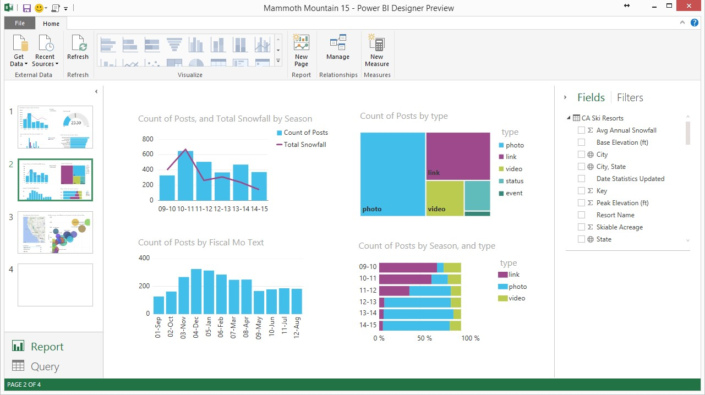
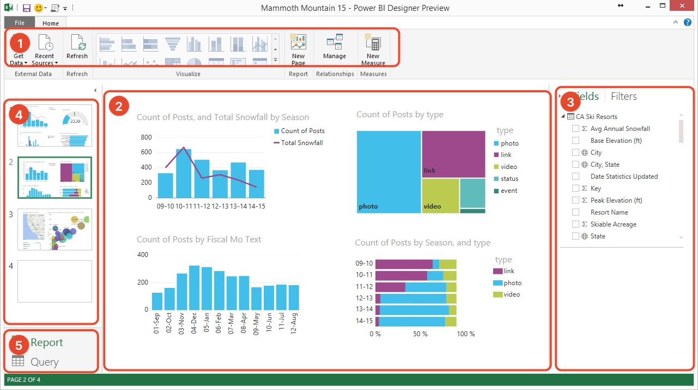
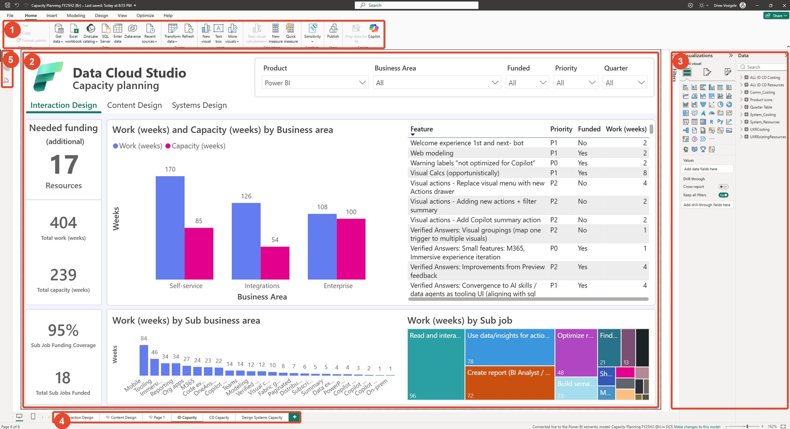
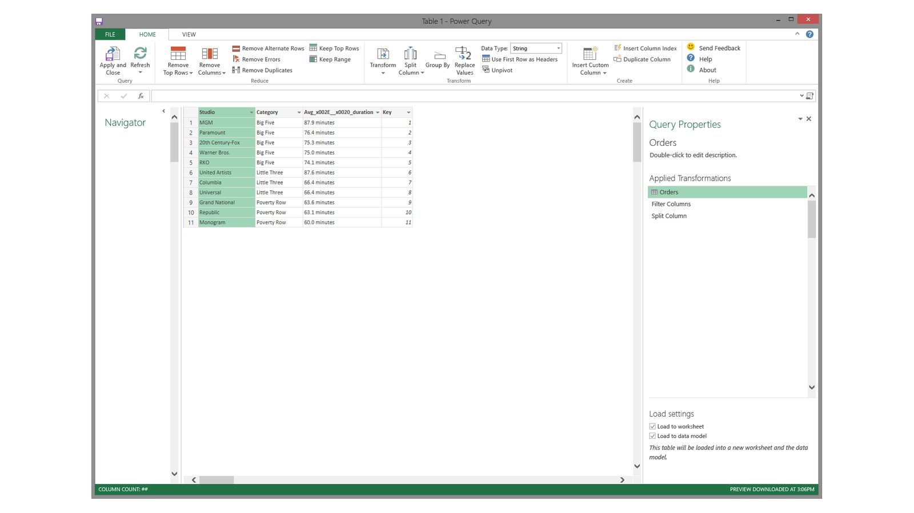
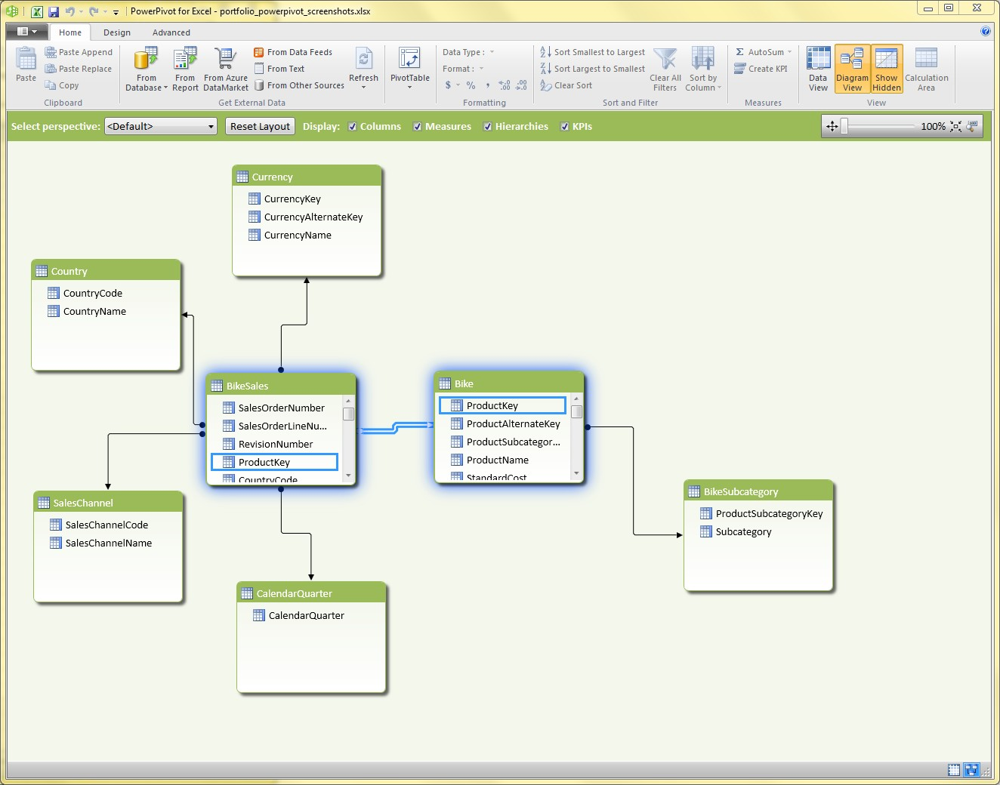

Originating a product
Three Excel add-ins became one tool, Power BI Desktop, in about ten months from pitch to launch.
The problem
Microsoft's data tools for business users were three Excel add-ins. Power Query got the data, Power Pivot modeled it, and Power View showed it. In 2010 we studied 38 people at 12 companies. They hopped between these product islands to get from a question to an answer they could share. Each piece was powerful. But they were hard to find, and they didn't work as one flow.
The model: the report comes first
I centered the product on the outcome people wanted, the report. The query and the data model exist to serve it. So the report is the main canvas, and an empty canvas tells you to get data right away.
Then defer complexity: if people don't need to make a choice yet, don't force it. Ask only what's necessary, like the source and any credentials, and let people keep pressing OK until they're making a visual. Everything stays editable later.
The scenarios were simple. We took them from the three add-ins and joined them into one flow: get data, clean it up, connect the tables, add a calculation, and make a chart.
The proof
I built a click-by-click mock of the whole journey, in one window called Power BI. I designed every Desktop screen and scenario in it myself, every pixel. Russell Roman and Andrew Ng designed the PowerBI.com screens in the mock. When James Phillips asked how it would work outside Excel, I deleted the one slide that launched it from Excel. Everything after it was already standalone. It was greenlit and went to Scott Guthrie's review in October 2014.
 Get data firstThe report canvasSuggested visuals
Get data firstThe report canvasSuggested visuals- Get data first
- The report canvas
- Suggested visuals


What happened
The preview shipped in December 2014 with the same shell, and Power BI Desktop reached general availability in July 2015. I led the Desktop design team through launch: six designers, five of whom I hired along the way. I also brainstormed with the PowerBI.com designers along the way. In 2019 the whole product became mine to lead.
Twelve years later
Three decisions have held for more than a decade. The report is the main canvas. "Get data" is the first thing it asks you to do. And the query and the model serve the report: easy to reach, but out of the way.
Two early changes were on purpose. Page thumbnails took work to redraw after every edit, and they wasted space when most reports have only a few pages. So pages moved to tabs. The switch between report and query came from Outlook's mail-and-calendar buttons, and it moved to a rail of buttons down the left side. Power BI was one of the first Microsoft products to work that way. Today that left rail is common across Microsoft, and it's how you get around Fabric. Users say the rail they knew from Power BI helped them find their way.
Then and now




Key
- Ribbon: get data, refresh, visualize, model
- Report canvas
- Fields and filters, now with visualizations
- Pages: thumbnails became tabs, which are quicker to redraw and take less room
- Views: an Outlook-style switch became the left rail, now Fabric's navigation
Other wins along the way

Power Query editor
A ribbon on top, a list of sources, a data grid and the steps you applied on the right. People still use this layout in Excel, Power BI and Fabric.

Automatic relationship detection
Excel users knew two tables belonged together, but not what a key was. My research uncovered that mental model and shaped how Power Pivot spots a missing relationship and offers to create it. I also drew the first designs for its relationship dialog.
A faster benchmark
We ran usability tests in parallel, like a game playtest. Results came a month faster, at about 85% lower cost.